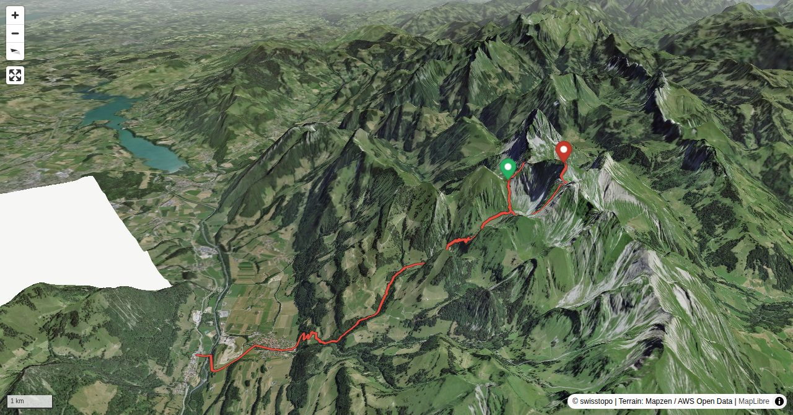

Vanil Noir, the highest mountain in the canton of Freiburg, stands in the centre of a nature reserve, which on two sides is limited by the Saane and on the north by the Jaunbach. It is impossible to get close to Vanil Noir by using the public transportation system. Wherever you leave the bus or the train, it takes a while until you reach the summit cross. The tour can be made shorter by driving, cycling or staying overnight at Cabane de Bounavaux.
On weekdays Grandvillard can also be reached by bus from Bulle. Compared to the train you save 40 min.
Quick Facts
| Summit elevation | 2387 m |
|---|---|
| Difficulty | SAC T4+ Check the route notes below for terrain and commitment level. Guide |
| Trailhead | Grandvillard/ Villars-sous-Mont, Bahnhof |
| Region | Northern Alps |
| Canton | Fribourg |
| Distance | 20.6 km (loop) |
| Total ascent | ~1659 m |
| Elevation range | 733-2387 m |
| Route sources | SAC Route Portal |
| Route author | Daniel Anker (via SAC Route Portal) |
Photos

Vanil Noir and the normal route on the SE face
© Neumann Oliver · 07/2017
Above Les Baudes. Vanil Noir is in the background.
© Neumann Oliver · 08/2016
Cabane de Bounavaux CAS, Le Moléson is in the background.
© Neumann Oliver · 07/2017
Vallon des Morteys and the Chalet des Marindes CAS
© Neumann Oliver · 07/2017
Pas de la Borière, the crux on the ascent
© Neumann Oliver · 07/2017
The descent from Vanil Noir on the SE face
© Neumann Oliver · 07/2017
Vanil Noir viewed from Plan des Eaux
© Neumann Oliver · 08/2016Photos: Neumann Oliver — via SAC Route Portal
Planning
i
i
sac_scale (precise T1–T6) with
swissTLM3D Wanderwegart
fallback where OSM is silent (coarser T2/T3 and T4+ buckets).
Coverage: OSM 20.9% · swisstopo 65.4% · unknown 12.7%.Elevations computed from the inlined GPX track (SwissTopo height API).
Loading forecast…
Start: Grandvillard/ Villars-sous-Mont, Bahnhof (1995 m)
Route returns to Grandvillard/ Villars-sous-Mont, Bahnhof.
3D Terrain View

Route Details
Grandvillard – Vanil Noir
- Total hiking time: 8½ h Grandvillard railway station – Cabane de Bounavaux: 3 h Cabane de Bounavaux – Vanil Noir: 2¼ h Vanil Noir – Cabane de Bounavaux: 1½ h Cabane de Bounavaux – Grandvillard railway station: 1¾ h
Terrain & safety
The routes on Vanil Noir are well equipped with steel cables and chains, but many precarious passages do need to be negotiated without technical help. The tour must not be undertaken in wet conditions!
Source: SAC Route Portal
Field Reference
| Trailhead | Grandvillard/ Villars-sous-Mont, Bahnhof | 46.53550, 7.14260 |
|---|---|---|
| Summit | Vanil Noir (2387 m) | 46.52848, 7.14836 |
Coordinates are WGS84 decimal degrees (lat, lon). Emergency: 112 (general) or 1414 (Rega air rescue). Page URL: